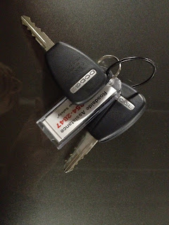

Rental Car Keys
2012-01-27
{kind=link}

If Jerry Seinfeld already covered this in the 1980's, please forgive me. If not, just read it in his voice for maximum effect.D'jya ever notice how rental car companies always give you the most awkward, cumbersome keychains with these weird plastic ID tags? What's that about, huh? I mean, are we supposed to use the tag to find our car in the Disney parking lot? "I know we were in Pluto, and it says here it was a Midnight Blue Dodge Stratus, but I can't seem to find...excuse me, Mr. security guard, could you help me find this car? Apparently the VIN is HGT890...followed by the chemical symbol for Boron..."
And what's the deal with this weird plastic-coated wire that holds the keys together? Have you ever tried to cut one of these wires? They could be used as a tow-rope in an emergency, if only they were a few feet longer.
And can someone please tell me why they give me two identical keys to the car, secured together with this min-tow-rope keychain? Can't they keep track of the spare key themselves? Why tease me with the prospect of sharing the car with someone, only to make it impossible because of this bullet-proof cable they've connected the keys with. Is there some clause hidden deep in the rental agreement that lays out the fees associated with these keys? "Lost key: $50; Lost both keys: $150; Both keys returned, but tow-rope severed in order to maximize the utility of actually having two keys: $250; Both keys returned, tow-rope in tact, but plastic ID tag missing: you just bought yourself a Midnight Blue Dodge Stratus, sir."I'm glad to have that off my chest.
Labels: Miscellany, Rants